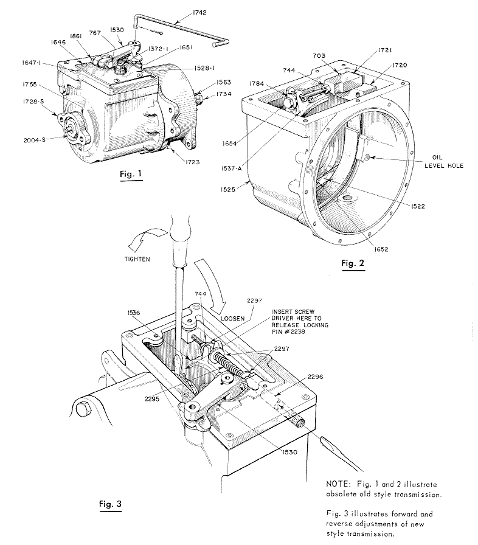
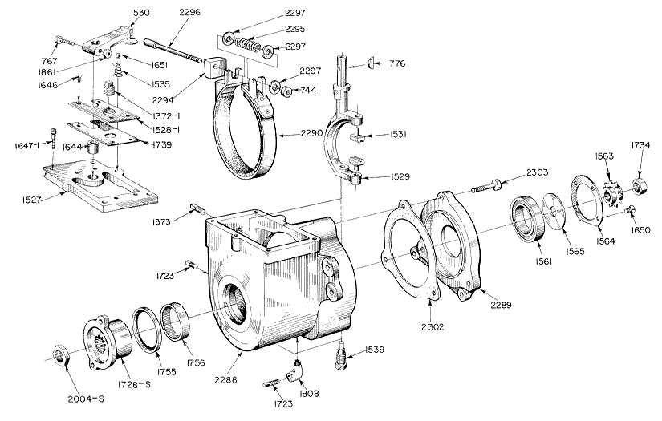
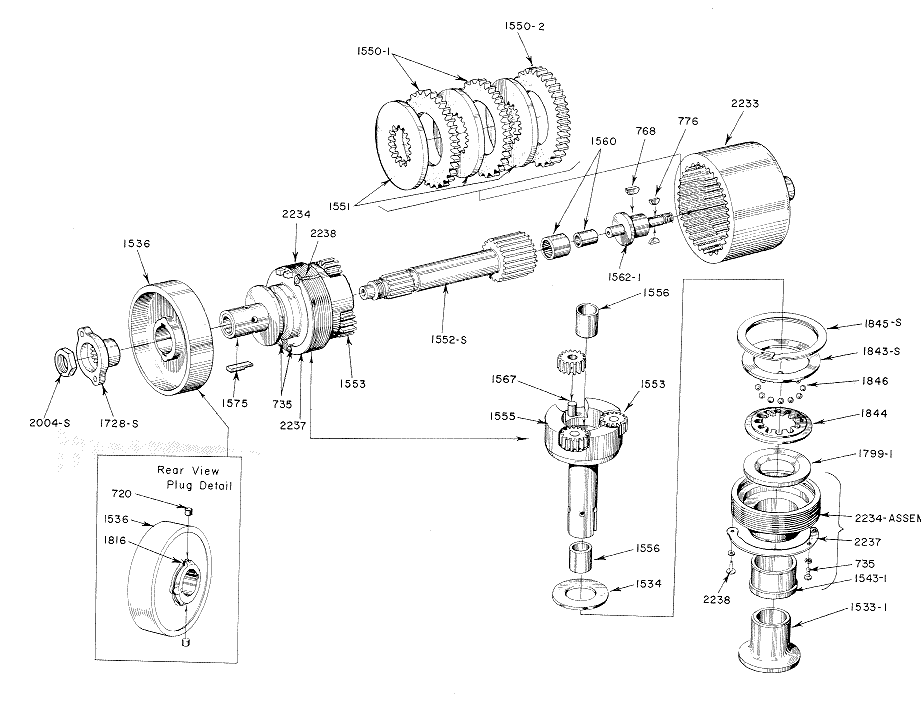

PARTS REORDERING
AND
GENERAL INSTRUCTIONS
FOR DISASSEMBLING, REASSEMBLING, AND REPAIRING
REVERSE GEAR TRANSMISSIONS ON LOCKE TRIPLEX MOWERS
Always give Serial Number of Mowers when ordering Parts
1974
PARAGRAPH
1 General Description
2 - 4 Lubrication
5 - 12 Forward Clutch Adjustment
13 - 15 Reverse Brake Band Adjustment
16 - 18 General Overhaul
19 - 28 Covers the disassembly necessary for replacing #2290 Reverse Brake Band Assembly
29 - 33 Covers the disassembly necessary for replacing the Clutch Discs, Sun Gears, Planetary Gears, and reloading of the Ball Cage
34 - 37 Covers the disassembly necessary for replacing the Brake Drum, Planetary Gear Carrier, Clutch Adjusting Ring and Thrust Washer, Sun Gear Needle Bearing and Planetary Gear Carrier Bushings.
38 - 40 Assembly of Brake Drum and Planetary Gear Carriers
41 - 42 Assembly of Clutch Balls in Ball Cage
43 - 45 Assembly of Gears, Clutch Discs, Internal Gear and Internal Gear Flange
46 - 49 Assembly of Output End of Transmission, Output Ball Bearing and Tractor Sprocket
50 - 54 Assembly of input Shaft Needle Bearing
55 - 57 Assembly of Input Shaft Driver, Gear Housings, Clutch Fork, Gear Rods and Clutch Lever
58 - 60 General Instructions
GENERAL INSTRUCTIONS
FOR DISASSEMBLING, REASSEMBLING, AND REPAIRING
REVERSE GEAR TRANSMISSIONS ON LOCKE TRIPLEX MOWERS
1. The tractor clutch on these machines is a multiple disc type with a planetary reverse gear completely enclosed and running in an oil bath.
LUBRICATION
2. The oil level should be checked at regular intervals by removing the oil level pipe plug #1723 at the front side of the transmission case, The oil should be drained after the first 10 hours operation (drain plug is located at the bottom of the transmission), and refilled to overflow at the oil level plug #1723 with Type A transmission oil. Type A transmission oil is the same as the oil used in most cars with automatic transmissions. Additional changes of oil should be made after each 100 hours of operation.
3. The transmission requires only 12 ounces of oil and is equipped with a breather #1372-1 located on the cover plate #1528-1.
4. IMPORTANT - If the transmission is always run with clean oil, it will outlast the rest of the machine.
FORWARD CLUTCH ADJUSTMENT
5. If the machine shows evidence of slippage as the clutch discs wear, it will be necessary to take up on the adjustment as follows:
6. The Tractor Clutch Lever #1826 should be in the neutral position 1/811 before hitting the stop of the #1819 bracket shown on plate 14 in the parts book. This adjustment can be made with the #1626 Rod End.
7. It is necessary to lift this lever up over the stop to go into reverse. This pause eliminates the shock on the tractor chain, ball bearings, etc.
8. The motor should.be stopped while making adjustments. Make certain that the clutch lever #1530 is in the neutral position with the ball check #1651 in the groove of this lever.
9. Remove the four screws #1646 that hold the steel cover plate #1528-1 to the top of the transmission and use caution in removing the plate not to damage the gasket #1739.
10. Roll the machine forward or backward until the #2238 locking pin is on top. Use a screw driver as shown in Fig. 3 to release locking pin which locks the adjusting ring in one of the 51 spaces cut in the #2233 internal gear.
11. Turn the adjusting ring in the direction of the arrow as shown on Fig. 3
12. Adjust only one space at a time.
REVERSE BRAKE BAND ADJUSTMENT
13. To adjust the wear of the reverse brake band remove pipe plug #1510, loosen jam nut #744 on brake adjusting screw #2296. Place screwdriver in brake adjusting screw and take up about one full turn of the brake screw until the brake drum #1 536 still turns freely when the clutch lever #1826 is in the neutral position, and the clutch shifting fork has moved the flange of the #1533-1 clutch cone just up to the hub of the #1536 brake drum. Then the brake band should start to grip the drum when the clutch lever #1826 is pulled back for the reverse to operate.
14. If the mower has a tendency to crawl in either direction when in the neutral position, it is evident that either the clutch or the brake band is set up too tight or the oil is too heavy or dirty.
15. All adjustments on the machine should be made when the transmission is warm.
GENERAL OVERHAUL
16. The following instructions cover the replacement of broken brake band assemblies, replacement of friction discs, and major repairs not covered by the adjustment instructions.
17. While the transmission is still on the machine, loosen the Tractor Sprocket Lock Nut #1734 before removing the Tractor Chain,as this prevents the turning of the Sprocket Stud while removing the Lock Nut. This does not have to be done if only replacing the Reverse Brake Band Assembly #2290.
18. The next step is to remove the Transmission unit from the machine.
DISASSEMBLY OF THE REVERSE GEAR TRANSMISSION
19. Drain oil from the Transmission by removing #1723 Pipe Plug at the bottom of the Transmission (Fig. 1),
20. Engage the forward clutch with the Clutch Lever #1530. This locks the internal unit into one solid unit from the Input Shaft Driver #1728-S to the Tractor Clutch Sprocket #1563.
21. Loosen the Input Shaft Lock Nut #2004-S on the input end of the Sun Gear Shaft #1552-S as shown in Fig. 5. To do this, hold the Transmission in a vise by the #1563 Sprocket on the Output end with 2 woo blocks.
22, After removing this nut, the Input Shaft Driver 41728-S can be pulled off the Input Shaft by using a wheel puller or two screw drivers as pries. Be careful not to damage the case of the Oil Seal #1755 (Fig. 4).
23. Remove the Clutch Lever 41530 which is held with a Locking Bolt #767 and Woodruff Key #776 (Fig. 4).
24. Pick out the Clutch Lever Ball Check #1651 and its Spring #1535. Remove Transmission Cover Plate #1528-1 and its Gasket #1 739. Next, remove the Transmission Gear Housing Cover #1527 which is held by 6 Socket Head Cap Screws 41647-1 (Fig. 4).
25. Remove Pipe Plug #1373, loosen Jani Nut #744 unscrew Brake Adjusting Screw #2296, remove block spring and washers and lay aside.
26. Remove the Clutch Fork Lower Fulcrum Stud #1539 which has a hexagon head. This allows the Clutch Fork #1529 to be lifted out with the two Clutch Fork Trunnion Dogs #1531 as shown in Fig. 4.
27. Remove the 3 Transmission Housing Cap Screws #2303 which holds Flange #2289 to Housing #2288 a Gasket #2302 is used as a seal between the housing and flange (Fig. 4).
28. The Flange #2289 with Oil Seal #1755 and Input Bearing -#1756 can now be removed and examined. If it is necessary to replace the Brake Band Assembly #2290 remove Adjusting Screw #2296 as shown in (Fig. 4).
29. All of the internal mechanisms are now separated as a sub-assembly. To disassemble this unit a clip 3/811 wide can now be placed on the Planetary Gear Carrier #1555 to limit the movement of the Clutch Cone #1533-1 which will prevent the Clutch Balls from dropping out of their Cage when the Internal Gear #2233 is screwed off of the Adjusting Ring #2234, (Fig. 5).
30. To replace the Friction Clutch Disc #1550-1 and #1550-2. and Steel Discs #1551, with screw driver release locking pin (hold out), turn internal gear, and remove same. Remove friction and steel discs.
31. The Sun Gear Shaft Assembly #1552-S can now be pulled out. Pick out the 3 Planetary Pinions #1553 (Fig. 5).
32, To examine the Clutch Adjusting Ring #2234, Thrust Washers #1534 and #1799-1 and the Ball Cage #1844, remove the 3/811 wide clip from the Carrier #1555 metioned in paragraph 29 which allows the Clutch Cone #1533-1, Adjusting Ring 42234, Carrier #1555, Ball Cage #1844, Washers #1534 and #1799-1 and Balls #1846 to separate for inspection. If any of these need replacing, cut the Locking Wire #1816 on the Brake Drum Hub #1536 and remove the 2 Locking Plugs #720 (Fig. 5). There are holes in the #1556 Planetary Carrier Bushings for knockouts.
33, Support the Brake Drum #1536 on 2 parallels and press the Planetary Carrier #1555 out of the Brake Drum. The Brake Drum #1536 is keyed to the Carrier with a Feather Key #1575, the right end of which is spread
34. The Clutch Cone #1533-1. the Clutch Adjusting Ring 42234, the Ball Cage #1844, the 12 #1846 Clutch Balls, and the Thrust Washers #1799-1 and #1534 can now be slid off the Carrier.
35. If a transmission is run in a continually slipping condition, it will cause the Clutch Balls #1846 to wear a groove in the Thrust Washers 41799-1 and #1534 which will make it difficult to engage the clutch in the forward position.
36. Examine the Sun Gear Shaft #1552-S for wear, and also the Bronze Bushings #1556 in the Planetary Gear Carrier #1555. These can be replaced.
37. Also examine the Sun Gear Needle Bearing and its Quill 41560 and replace if necessary. This Needle Bearing is assembled with a press fit into the end of the Sun Gear Shaft Assembly #1552-S.
ASSEMBLY OF THE REPAIRED TRANSMISSION
38. If the unit has been completely disassembled, as outlined in the preceding instructions, the following order of sequence should be followed in reassembling the unit.
39. Assemble the Clutch Adjusting Ring #2234 and Bushing #1543-1, with the Thrust Washer #1799-1, the Ball Cage #1844, Retainer Ring #1843-S, Snap Ring #1845-S and slide the Clutch Cone 41533-1 into the Bushing. Then slide this sub-assembly onto the Planetary Gear Carrier #1555 with its Thrust Washer #1534 in place.
40, Next, assemble the Brake Drum 41536 onto the Carrier #1 555 with the Feather Key #1575. The slightly flattened end will keep this key from backing out through the Brake Drum. Be careful that this key does not stick up above the diameter of the Carrier #1555, since this will limit the motion of the Clutch Cone #1533-1, which should move freely lip to the hub of the Brake Drum #1536. Insert the 2 Locking Plugs #720 in the hub of the Brake Drum #1536 and wire in place with the #1816 soft iron Locking Wire.
LOADING THE BALL CAGE
41, With the Clutch Cone #1533-1 pushed up against the Clutch Adjusting Ring Bronze Bushing #1543-1. insert the 12 Clutch Balls #1846 in the openings in the Ball Cage #1844. rl'his should be done while holding the whole assembly in a vertical position which keeps the balls from dropping out.
Then slide the whole assembly along the Planetary Gear Carrier 41555 until the Clutch Balls hit the Thrust Washer #1534 on the rear of the Carrier as shown in Fig. 5.
42. While in this position, put a clip 3/811 wide on the Carrier to limit the motion of the Clutch Cone #1533-1. Keep this clip on until all the Clutch Discs have been assembled with the Internal Gear #2233 or the Clutch Balls will drop out and it will be necessary to disassemble the entire unit to reload the Ball Cage.
ASSEMBLY OF GEARS, CLUTCH DISCS,
INTERNAL GEAR AND INTERNAL GEAR FLANGE
43. Then insert the Sun Gear Shaft #1552-S, and then the 3 Planetary Pinions #1553. Now place the Steel Clutch Disc #1551 (internal teeth), the 3 Clutch Friction Discs #1550-1 (external teeth), in this order: 1 - #1551, 1 - A1550-19 1 - #1551t 1 - #1550-19 1 - #1551, then place the double thickness Friction Disc #1550-2.
With a rule line up the teeth of the friction discs and the pinion gears (all three gears). position #2233 Internal Gear over discs and gears, then screw on #2234 Adjusting Ring into internal gear until 2 threads remain exposed.
44. The clutch Adjusting Ring #2234 should now be adjusted so that the Clutch Cone #1533-1 engages with considerable pressure. The final adjustment should be made after the sub-assembly has been assembled in the Transmission Housing.
45. Now the 3/811 wide clip that limits the motion of the Clutch Cone can be removed and the clutch should be left in the engaged position (Fig, 5),
FINAL OUTPUT END ASSEMBLY
46. Assemble the Ball Bearing #1561 into the Housing Flange #2289 and fasten in place with the Output Ball Bearing Retainer Plate #1564 with four 1/4-20 Flat Head Screws #1650 (Fig. 4).
47. insert two parallels between the Brake Band #1536 and the Clutch Adjust-
ing Ring #2234. Support the Adjusting Ring on these parallels with the mechanism in a vertical position and rest the parallels on a pair of blocks of sufficient height to prevent the Sun Gear Shaft #1552-S touching the bench or support of the blocks.
48. With the Clutch Cone #1533-1 in the engaged position and the driving mechanism resting on the parallels on the blocks in a vertical position, place the Output Flange #2289 with its Ball Bearing #1561 clamped in place by the Retainer Plate #1564, over the driving mechanism; place a wood block 1 1/211 thick with a clearance hole for the Tractor Sprocket Stud #1562-1 over this stud and across the Flange #2289 and drive the flange and Ball Bearing onto the #1562-1 Stud and Internal Gear #2233.
49. Place the Ball Bearing Clamping Washer #1565 onto the Stud #1562-1, Insert the 2 Woodruff Keys #776 and drive the Tractor Sprocket #1563 onto the Stud. Assemble the Tractor Sprocket Lock Nut #1734 and be sure the Clamping Washer #1565 turns freely in the Retainer Plate #1564.
FINAL ASSEMBLY - INPUT END
50. Assemble the input Needle Bearing #1756 by pressing it into place in the Input End of the Housing #2288, then press the Oil Seal #1755 into place. Use a plug with parallel surfaces of a greater diameter than the oil seal and be sure that it is entered straight.
51. Place the Brake Band Assembly #2290 in the #2288 Housing insert #2296 adjusting screw in housing then place the following parts on adjusting screw; #2294 Gear Rack, #2297 Washer, #2295 Spring, 2 piece #2297 Washers, #744 Nut. Hold nut ind turn adjusting screw until screw is about 1/211 below surface.
52. Place 2 parallels 2" high to clear the hub on the #2289 Flange Assembly. Place #@302 Gasket over flange section of #2289 Assembly. Position #2288 Housing Assembly on #2289 Flange and lock together with 3 piece #2303 Cap Screws.
53. Start the Input Shaft Driver #1728-S on the Input end of the Input Shaft #1552-S and drive onto the shaft until the hub of the Driver is against the slight shoulder on the Input Shaft #1552-S (Fig. 5).
54. Tighten Lock Nut #2004-S against the Driver #1728-S (Fig. 5).
ASSEMBLY OF CLUTCH FORK
55, Assemble the 2 Clutch Fork Trunnion Dogs #1531 in the Clutch Fork #1529 and slide this into the Transmission on to the Clutch Cone #1533-1. then screw in the lower Clutch Fork Fulcrum Stud #1539 (Fig. 4).
56. Assemble the Gear Housing Cover #1527 to the Housing #2288 with some gasket cement to prevent leakage (Fig. 4).
57. Assemble the Clutch Fork Lever #1530 and Woodruff Key #776. Insert Ball Check Spring #1535 and Ball #1651 in the Housing Cover as shown in Fig. 1. The lever #1530 should be pushed down within 1/811 of the Cover and locked with the Bolt #767 and Lock Nut #1861 (Fig. 4).
GENERAL INSTRUCTIONS
58. Now make the final adjustments of the Clutches as outlined on Pages 3 and 4.
59. After adjustments, assemble the Cover Plate #1528-1 with its Gasket #1739. Fill the Transmission with approximately 12 ounces Type A oil (Type A transmission oil is the same as the oil used in most cars with automatic transmissions) until it starts to overflow at the Oil Level hole on the side of the Housing #2288 (Fig. 2).
60. A heavy oil will not penetrate and lubricate all parts of the Transmission and will ultimately cause failure. A heavy oil will also cause the discs to stick together, and the Forward Clutch will not release.


